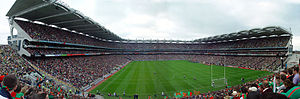
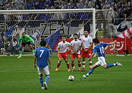

Sports Euphoria
Sports EuphoriaFootball
 Football refers to a number of sports that involve, to varying degrees, kicking a ball with the foot to score a goal. The most popular of these sports worldwide is association football, more commonly known as just "football" or "soccer". Unqualified, the word football applies to whichever form of football is the most popular in the regional context in which the word appears, including association football, as well as American football, Australian rules football, Canadian football, Gaelic football, rugby league, rugby union[1] and other related games. These variations of football are known as football codes.
Various forms of football can be identified in history, often as popular peasant games. Contemporary codes of football can be traced back to the codification of these games at English public schools in the eighteenth and nineteenth century. The influence and power of the British Empire allowed these rules of football to spread to areas of British influence outside of the directly controlled Empire, though by the end of the nineteenth century, distinct regional codes were already developing: Gaelic Football, for example, deliberately incorporated the rules of local traditional football games in order to maintain their heritage. In 1888, The Football League was founded in England, becoming the first of manyprofessional football competitions. During the twentieth century, the various codes of football became amongst the most popular team sports in the world.
In most codes, there are rules restricting the movement of players offside, and players scoring a goal must put the ball either under or over a crossbar between the goalposts. Other features common to several football codes include: points being mostly scored by players carrying the ball across the goal line; and players receiving a free kick after they take a mark or make a fair catch.
Peoples from around the world have played games which involved kicking or carrying a ball, since ancient times. However, most of the modern codes of football have their origins in England.[7]
Football refers to a number of sports that involve, to varying degrees, kicking a ball with the foot to score a goal. The most popular of these sports worldwide is association football, more commonly known as just "football" or "soccer". Unqualified, the word football applies to whichever form of football is the most popular in the regional context in which the word appears, including association football, as well as American football, Australian rules football, Canadian football, Gaelic football, rugby league, rugby union[1] and other related games. These variations of football are known as football codes.
Various forms of football can be identified in history, often as popular peasant games. Contemporary codes of football can be traced back to the codification of these games at English public schools in the eighteenth and nineteenth century. The influence and power of the British Empire allowed these rules of football to spread to areas of British influence outside of the directly controlled Empire, though by the end of the nineteenth century, distinct regional codes were already developing: Gaelic Football, for example, deliberately incorporated the rules of local traditional football games in order to maintain their heritage. In 1888, The Football League was founded in England, becoming the first of manyprofessional football competitions. During the twentieth century, the various codes of football became amongst the most popular team sports in the world.
In most codes, there are rules restricting the movement of players offside, and players scoring a goal must put the ball either under or over a crossbar between the goalposts. Other features common to several football codes include: points being mostly scored by players carrying the ball across the goal line; and players receiving a free kick after they take a mark or make a fair catch.
Peoples from around the world have played games which involved kicking or carrying a ball, since ancient times. However, most of the modern codes of football have their origins in England.[7]
Etymology
There are confilicting explanations of the origin of the word "football". It is widely assumed that the word "football" (or "foot ball") references the action of the foot kicking a ball. There is an alternative explanation, which is that football originally referred to a variety of games in medieval Europe, which were played on foot. There is no conclusive evidence for either explanation.
Calcio Fiorentino
In the 16th century, the city of Florence celebrated the period between Epiphany and Lent by playing a game which today is known as "calcio storico" ("historic kickball") in the Piazza Santa Croce. The young aristocrats of the city would dress up in fine silk costumes and embroil themselves in a violent form of football. For example, calcio players could punch, shoulder charge, and kick opponents. Blows below the belt were allowed. The game is said to have originated as a military training exercise. In 1580, Count Giovanni de' Bardi di Vernio wrote Discorso sopra 'l giuoco del Calcio Fiorentino. This is sometimes said to be the earliest code of rules for any football game. The game was not played after January 1739 (until it was revived in May 1930).
Official disapproval and attempts to ban football
Numerous attempts have been made to ban football games, particularly the most rowdy and disruptive forms. This was especially the case in England and in other parts of Europe, during the Middle Ages and early modern period. Between 1324 and 1667, football was banned in England alone by more than 30 royal and local laws. The need to repeatedly proclaim such laws demonstrated the difficulty in enforcing bans on popular games. King Edward II was so troubled by the unruliness of football in London that on April 13, 1314 he issued a proclamation banning it: "Forasmuch as there is great noise in the city caused by hustling over large balls from which many evils may arise which God forbid; we command and forbid, on behalf of the King, on pain of imprisonment, such game to be used in the city in the future." The reasons for the ban by Edward III, on June 12, 1349, were explicit: football and other recreations distracted the populace from practicing archery, which was necessary for war. In 1424, the Parliament of Scotland passed a Football Act that stated it is statut and the king forbiddis that na man play at the fut ball under the payne of iiij d � in other words, playing football was made illegal, and punishable by a fine of four pence. King James I of England's Book of Sports (1618) however, instructs Christians to play at football every Sunday afternoon after worship. The book's aim appears to be an attempt to offset the strictness of the Puritans regarding the keeping of the Sabbath
Establishment of modern codes
English public schools
While football continued to be played in various forms throughout Britain, its "public" schools (known as private schools in other countries) are widely credited with four key achievements in the creation of modern football codes. First of all, the evidence suggests that they were important in taking football away from its "mob" form and turning it into an organised team sport. Second, many early descriptions of football and references to it were recorded by people who had studied at these schools. Third, it was teachers, students and former students from these schools who first codified football games, to enable matches to be played between schools. Finally, it was at English public schools that the division between "kicking" and "running" (or "carrying") games first became clear. The earliest evidence that games resembling football were being played at English public schools � mainly attended by boys from the upper, upper-middle and professional classes � comes from the Vulgaria by William Herman in 1519. Herman had been headmaster atEton and Winchester colleges and his Latin textbook includes a translation exercise with the phrase "We wyll playe with a ball full of wynde".[39] Richard Mulcaster, a student at Eton College in the early 16th century and later headmaster at other English schools, has been described as "the greatest sixteenth Century advocate of football".[40] Among his contributions are the earliest evidence of organised team football. Mulcaster's writings refer to teams ("sides" and "parties"), positions ("standings"), a referee ("judge over the parties") and a coach "(trayning maister)". Mulcaster's "footeball" had evolved from the disordered and violent forms of traditional football: [s]ome smaller number with such overlooking, sorted into sides and standings, not meeting with their bodies so boisterously to trie their strength: nor shouldring or shuffing one an other so barbarously ... may use footeball for as much good to the body, by the chiefe use of the legges.  In 1633, David Wedderburn, a teacher from Aberdeen, mentioned elements of modern football games in a short Latin textbook calledVocabula. Wedderburn refers to what has been translated into modern English as "keeping goal" and makes an allusion to passing the ball ("strike it here"). There is a reference to "get hold of the ball", suggesting that some handling was allowed. It is clear that the tackles allowed included the charging and holding of opposing players ("drive that man back"). A more detailed description of football is given in Francis Willughby's Book of Games, written in about 1660. Willughby, who had studied at Bishop Vesey's Grammar School, Sutton Coldfield, is the first to describe goals and a distinct playing field: "a close that has a gate at either end. The gates are called Goals." His book includes a diagram illustrating a football field. He also mentions tactics ("leaving some of their best players to guard the goal"); scoring ("they that can strike the ball through their opponents' goal first win") and the way teams were selected ("the players being equally divided according to their strength and nimbleness"). He is the first to describe a "law" of football: "they must not strike [an opponent's leg] higher than the ball".[citation needed] English public schools were the first to codify football games. In particular, they devised the first offside rules, during the late 18th century. In the earliest manifestations of these rules, players were "off their side" if they simply stood between the ball and the goal which was their objective. Players were not allowed to pass the ball forward, either by foot or by hand. They could only dribble with their feet, or advance the ball in a scrum or similar formation. However, offside laws began to diverge and develop differently at each school, as is shown by the rules of football from Winchester, Rugby, Harrow and Cheltenham, during between 1810 and 1850. The first known codes � in the sense of a set of rules � were those of Eton in 1815 and Aldenham in 1825. During the early 19th century, most working class people in Britain had to work six days a week, often for over twelve hours a day. They had neither the time nor the inclination to engage in sport for recreation and, at the time, many children were part of the labour force.Feast day football played on the streets was in decline. Public school boys, who enjoyed some freedom from work, became the inventors of organised football games with formal codes of rules.Firsts
Clubs
Sports clubs dedicated to playing football began in the 18th century, for example London's Gymnastic Society which was founded in the mid-18th century and ceased playing matches in 1796.[47][48] The first documented club to bear in the title a reference to being a 'football club' were called "The Foot-Ball Club" who were located inEdinburgh, Scotland, during the period 1824�41.[49][50] The club forbade tripping but allowed pushing and holding and the picking up of the ball.[50] Two clubs which claim to be the world's oldest existing football club, in the sense of a club which is not part of a school or university, are strongholds of rugby football: the Barnes Club, said to have been founded in 1839, and Guy's Hospital Football Club, in 1843. Neither date nor the variety of football played is well documented, but such claims nevertheless allude to the popularity of rugby before other modern codes emerged. In 1845, three boys at Rugby school were tasked with codifying the rules then being used at the school. These were the first set of written rules (or code) for any form of football.[51] This further assisted the spread of the Rugby game. For instance, Dublin University Football Club�founded at Trinity College, Dublin in 1854 and later famous as a bastion of the Rugby School game�is the world's oldest documented football club in any code.Competitions
One of the longest running football fixture is the Cordner-Eggleston Cup, contested between Melbourne Grammar School and Scotch College, Melbourne every year since 1858. It is believed by many to also be the first match of Australian rules football, although it was played under experimental rules in its first year. The first football trophy tournament was the Caledonian Challenge Cup, donated by the Royal Caledonian Society of Melbourne, played in 1861 under the Melbourne Rules. The oldest football league is a rugby football competition, the United Hospitals Challenge Cup (1874), while the oldest rugby trophy is the Yorkshire Cup, contested since 1878. TheSouth Australian Football Association (30 April 1877) is the oldest surviving Australian rules football competition. The oldest surviving soccer trophy is the Youdan Cup (1867) and the oldest national soccer competition is the English FA Cup (1871). The Football League(1888) is recognised as the longest running Association Football league. The first ever international football match took place between sides representing England and Scotland on March 5, 1870 at the Oval under the authority of the FA. The first Rugby international took place in 1871.Sheffield rules
By the late 1850s, many football clubs had been formed throughout the English-speaking world, to play various codes of football.Sheffield Football Club, founded in 1857 in the English city of Sheffield by Nathaniel Creswick and William Prest, was later recognised as the world's oldest club playing association football. However, the club initially played its own code of football: the Sheffield rules. The code was largely independent of the public school rules, the most significant difference being the lack of an offside rule. The code was responsible for many innovations that later spread to association football. These included free kicks, corner kicks, handball, throw-ins and the crossbar. By the 1870s they became the dominant code in the north and midlands of England. At this time a series of rule changes by both the London and Sheffield FAs gradually eroded the differences between the two games until the adoption of a common code in 1877.Australian rules
Various forms of football were played in Australia during the Victorian gold rush, from which emerged a distinct and locally popular sport. While these origins are still the subject of much debate the popularisation of the code that is known today as Australian Rules Football is currently attributed to Tom Wills. Wills wrote a letter to Bell's Life in Victoria & Sporting Chronicle, on July 10, 1858, calling for a "foot-ball club" with a "code of laws" to keep cricketers fit during winter. This is considered by historians to be a defining moment in the creation of the new sport. Through publicity and personal contacts Wills was able to co-ordinate football matches in Melbournethat experimented with various rules, the first recorded of which occurred on July 31, 1858. On 7 August 1858, Wills umpired a relatively well documented schoolboys match between Melbourne Grammar School and Scotch College. Following these matches, organised football matches rapidly increased in popularity. Wills and others involved in these early matches formed the Melbourne Football Club (the oldest surviving Australian football club) on May 14, 1859. The first members included Wills, William Hammersley, J.B. Thompson and Thomas H. Smith. They met with the intention of forming a set of rules that would be widely adopted by other clubs. The backgrounds of the original rule makers makes for interesting speculation as to the influences on the rules. Wills, an Australian of convict heritage was educated in England. He was a rugby footballer, a cricketer and had strong links to indigenous Australians. At first he desired to introduce rugby school rules. Hammersley was a cricketer and journalist who emigrated from England. Thomas Smith was a school teacher who emigrated from Ireland. The committee members debated several rules including those of English public school games. Despite including aspects similar to other forms of football there is no conclusive evidence to point to any single influence. Instead the committee decided on a game that was more suited to Australian conditions and Wills is documented to have made the declaration "No, we shall have a game of our own".The code was distinctive in the prevalence of the mark, free kick, tackling, lack of an offside rule and that players were specifically penalised for throwing the ball. The Melbourne football rules were widely distributed and gradually adopted by the other Victorian clubs. They were redrafting several times during the 1860s to accommodate the rules of other influential Victorian football clubs. A significant re-write in 1866 by H C A Harrison's committee to accommodate rules from the Geelong Football Club made the game, which had become known as "Victorian Rules", increasingly distinct from other codes. It used cricket fields, a rugby ball, specialised goal and behind posts, bouncing with the ball while running and later spectacular high marking. The form of football spread quickly to other other Australian colonies. Outside of its heartland in southern Australia the code experienced a significant period of decline following World War I but has since grown other parts of the world at an amateur level and the Australian Football League emerged as the dominant professional competition.Football Association
During the early 1860s, there were increasing attempts in England to unify and reconcile the various public school games. In 1862, J. C. Thring, who had been one of the driving forces behind the original Cambridge Rules, was a master at Uppingham School and he issued his own rules of what he called "The Simplest Game" (these are also known as the Uppingham Rules). In early October 1863 another new revised version of the Cambridge Rules was drawn up by a seven member committee representing former pupils from Harrow, Shrewsbury, Eton, Rugby, Marlborough and Westminster.  At the Freemasons' Tavern, Great Queen Street, London on the evening of October 26, 1863, representatives of several football clubs in the London Metropolitan area met for the inaugural meeting of The Football Association (FA). The aim of the Association was to establish a single unifying code and regulate the playing of the game among its members. Following the first meeting, the public schools were invited to join the association. All of them declined, except Charterhouse and Uppingham. In total, six meetings of the FA were held between October and December 1863. After the third meeting, a draft set of rules were published. However, at the beginning of the fourth meeting, attention was drawn to the recently published Cambridge Rules of 1863. The Cambridge rules differed from the draft FA rules in two significant areas; namely running with (carrying) the ball and hacking (kicking opposing players in the shins). At the fifth meeting it was proposed that these two rules be removed. Most of the delegates supported this, but F. M. Campbell, the representative from Blackheath and the first FA treasurer, objected. He said: "hacking is the true football". However, the motion to ban running with the ball in hand and hacking was carried and Blackheath withdrew from the FA. After the final meeting on 8 December, the FA published the "Laws of Football", the first comprehensive set of rules for the game later known as Association Football. The term "soccer", in use since the late 19th century, derives from an abbreviation of "Association". The first FA rules still contained elements that are no longer part of association football, but which are still recognisable in other games (such as Australian football and rugby football): for instance, a player could make a fair catch and claim a mark, which entitled him to a free kick; and if a player touched the ball behind the opponents' goal line, his side was entitled to a free kick at goal, from 15 yards (13.5 metres) in front of the goal line.
Rugby football
In Britain, by 1870, there were about 75 clubs playing variations of the Rugby school game. There were also "rugby" clubs in Ireland, Australia, Canada and New Zealand. However, there was no generally accepted set of rules for rugby until 1871, when 21 clubs from London came together to form the Rugby Football Union (RFU). The first official RFU rules were adopted in June 1871. These rules allowed passing the ball. They also included the try, where touching the ball over the line allowed an attempt at goal, though drop-goals from marks and general play, and penalty conversions were still the main form of contest.
Globalisation of association football
The need for a single body to oversee association football had become apparent by the beginning of the 20th century, with the increasing popularity of international fixtures. The English Football Association had chaired many discussions on setting up an international body, but was perceived as making no progress. It fell to associations from seven other European countries: France, Belgium, Denmark, Netherlands, Spain, Sweden, and Switzerland, to form an international association. The F�d�ration Internationale de Football Association (FIFA) was founded in Paris on May 21, 1904. Its first president was Robert Gu�rin. The French name and acronym has remained, even outside French-speaking countries.
Use of the word "football"
The word "football", when used in reference to a specific game can mean any one of those described above. Because of this, much friendly controversy has occurred over the termfootball, primarily because it is used in different ways in different parts of the English-speaking world. Most often, the word "football" is used to refer to the code of football that is considered dominant within a particular region. So, effectively, what the word "football" means usually depends on where one says it.